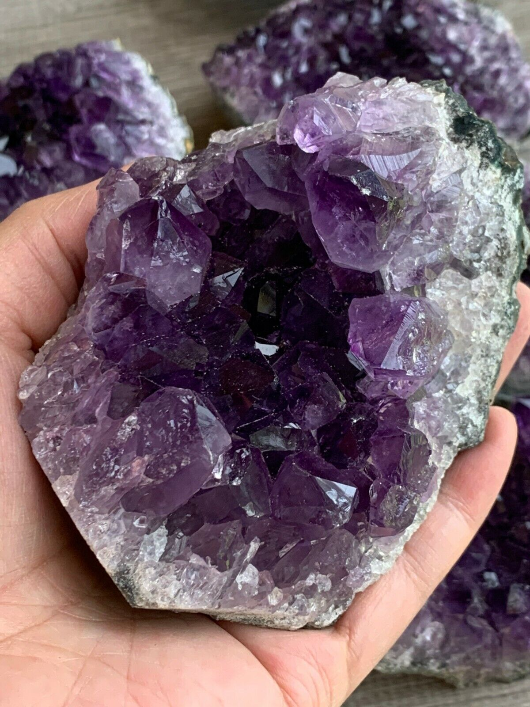

New here?

New to rockhounding and don't know where to start? Not to worry, we will show you the ropes. Click below to head over to our "Getting Started" guide
Getting StartedRocks & Minerals In Georgia


Georgia rockhounding maps to hunt for crystals, gemstones, minerals, and ores. Georgia has some amazing rockhounding opportunities, including popular locations like Graves Mountain, known for its rare and colorful minerals, and the Amicalola Falls area, where you can find quartz crystals. The state is also home to a variety of gemstones, such as amethyst, garnet, and tourmaline, making it an exciting destination for rock collectors.
Sponsored Dig Site

Own a digsite you would like to advertize in Georgia? Contact us for more information about being our sponsor of the month! Email sponsors@rockhounding.org for more information.
Dig With UsPlease always bring appropriate attire and do research before venturing out to rock hunt and crystal hunt. Also, be sure to verify that the location you want to hunt at is available for public access. Rockhounding.org does our best to verify, but it is your responsibility to verify as well because sometimes things change. We are not liable for any actions you take from the information you find on this site.
Keeping accurate records of Rockhounding & Gemstone Hunting Locations is a community effort! Know of a good spot that is missing from our maps? Feel free to submit it below. Thank you for your contributions to the rockhounding community!
Popular Rocks, Crystals, & Gemstones In Georgia
-
 Garnet
GarnetGarnet can be found in Georgia, particularly in the northern regions of the state, in areas with metamorphic rocks.
Read More -
 Gold Ore
Gold OreGold can be found in Georgia, particularly in the Dahlonega Gold Belt, which runs across the northern part of the state.
Read More -
Beryl
Beryl, including aquamarine and golden beryl, can be found in Georgia, particularly in the northeast part of the state, in areas with pegmatite deposits.
Read More -
 Staurolite
StauroliteStaurolite, also known as fairy crosses, can be found in Georgia, particularly in Fannin County and the surrounding areas.
Read More -

Amethyst
Amethyst can be found in Georgia, particularly in the northwest part of the state, in areas with volcanic rocks and hydrothermal veins.
Read More -
 Tourmaline
TourmalineTourmaline can be found in Georgia, particularly in the northern part of the state, in areas with pegmatite deposits.
Read More -
 Graphite
GraphiteGraphite can be found in Georgia, particularly in the Piedmont region, in areas with metamorphic rocks.
Read More -
 Barite
BariteBarite can be found in Georgia, particularly in the northwestern part of the state, in areas with sedimentary rocks and hydrothermal veins.
Read More -
 Agate
AgateAgate can be found in Georgia, particularly in the southern part of the state, in areas with volcanic rocks and sedimentary formations.
Read More -
 Shark Teeth
Shark TeethShark teeth can be found in Georgia, particularly along the coastline and in areas with sedimentary rocks and marine deposits.
Read More
Popular Rock Hunting Areas In Georgia
-
 Diamond Hill Mine
Diamond Hill MineDiamond Hill Mine, located in Abbeville, is a popular destination for rockhounds seeking quartz crystals, smoky quartz, and amethyst. The mine is open for public digging, and visitors can keep any gems they find.
Read More -
 Columbia Canal and Riverfront Park
Columbia Canal and Riverfront ParkLocated in downtown Columbia, the Columbia Canal and Riverfront Park offers opportunities to find fossils such as shark teeth and marine mammal bones along the Congaree River. The park also features walking trails and picturesque views.
Read More -
 Graves Mountain
Graves MountainGraves Mountain is known for its rutile, kyanite, and lazulite specimens. Although not open to the public regularly, occasional public digs are organized with permission from the property owner.
Read More -
 Folly Beach
Folly BeachFolly Beach, near Charleston, is a popular destination for fossil hunting. The beach is well-known for the abundance of shark teeth that can be found along its shoreline, including those from megalodon sharks.
Read More -
 Parris Mountain Serpentine Quarry
Parris Mountain Serpentine QuarryThe Parris Mountain Serpentine Quarry in Pickens County is known for its serpentine minerals, including chrysotile asbestos. While public access is limited, field trips and club visits can be arranged to explore this unique geological site.
Read More
Geology of Georgia
Georgia's geology is characterized by diverse rock formations, ranging from ancient Precambrian crystalline rocks in the Piedmont region to younger sedimentary rocks, including limestone, shale, and sandstone, in the Coastal Plain. The state is also home to the Blue Ridge Mountains, which are part of the larger Appalachian Mountain Range.
Georgia is known for its mineral wealth, including gold, which sparked a gold rush in the early 19th century. The state is also famous for its gemstones, such as amethyst, garnet, and tourmaline, as well as its diverse fossil deposits.
Rockhounding in Georgia offers a variety of opportunities, from gold panning in the Dahlonega area to gemstone hunting in the state's rich mineral regions and fossil collecting along the coast.